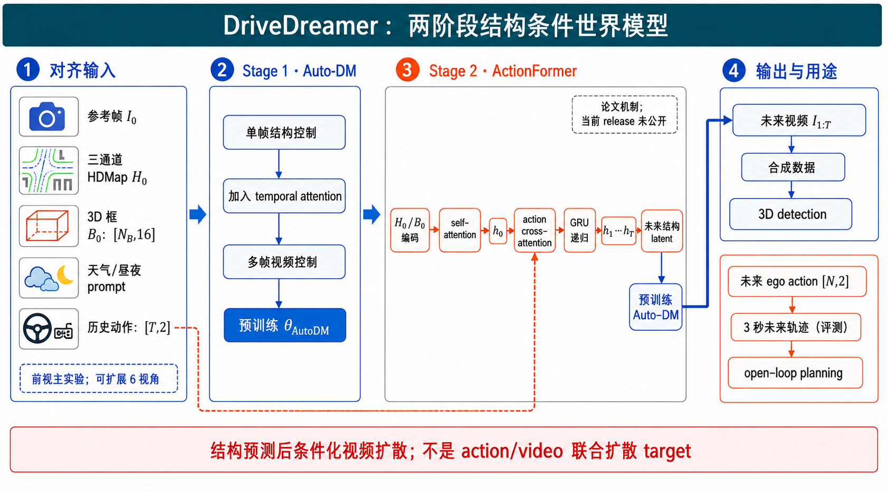
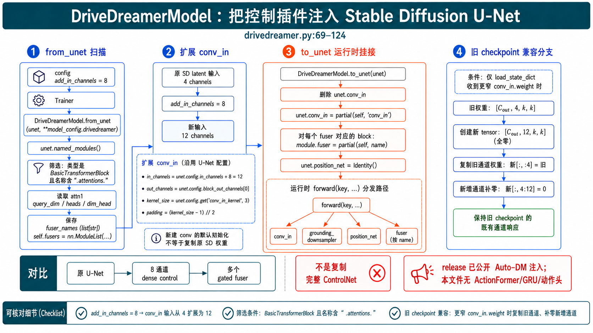
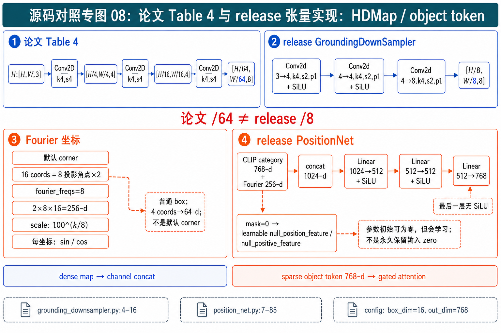
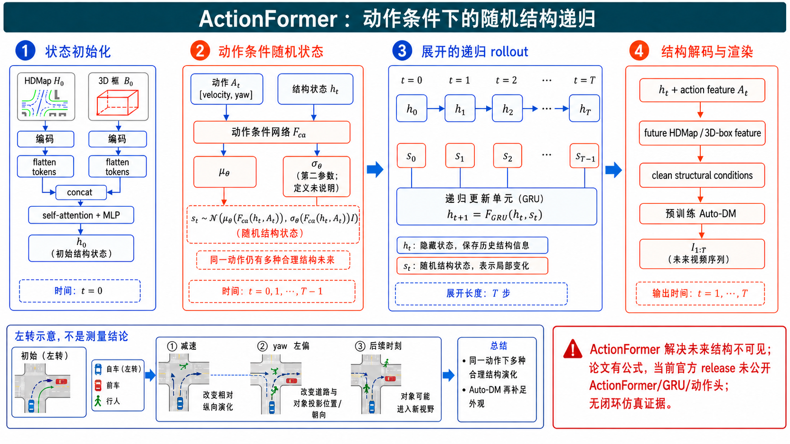
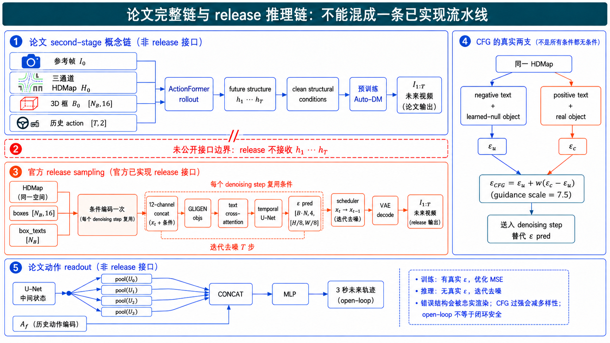
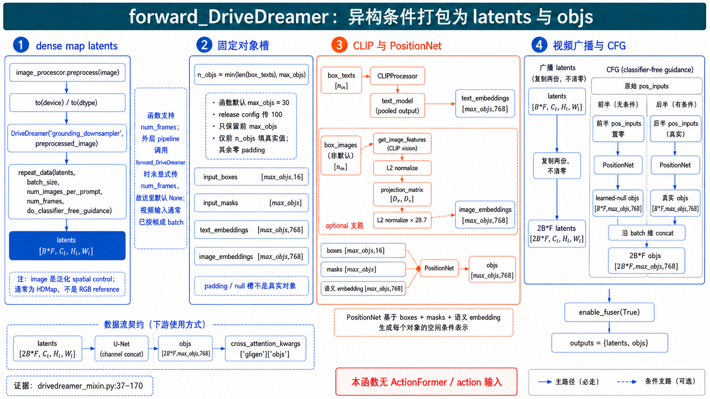
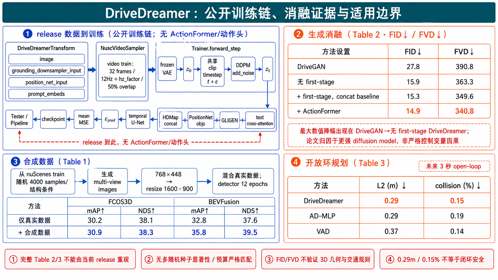

DriveDreamer 深度精读：把真实驾驶世界拆成“结构演化”与“视觉渲染”
论文元信息与阅读结论
- 论文：DriveDreamer: Towards Real-world-driven World Models for Autonomous Driving
- 作者：Xiaofeng Wang、Zheng Zhu、Guan Huang、Xinze Chen、Jiagang Zhu、Jiwen Lu
- 版本：arXiv:2309.09777v2，后发表于 ECCV 2024
- 任务场景：nuScenes 真实道路数据；700 段训练视频、150 段验证视频，每段约 20 秒、六个环视相机、原始相机流 12 Hz，合计约 100 万帧
- 官方源码：
JeffWang987/DriveDreamer，本地核对提交da1ca92f831bc23d91b59ad418eb47b41cbb1fa9 - 源码覆盖边界：仓库实际公开了 Auto-DM 的图像/视频结构条件训练与生成链，包括
GroundingDownSamplerHDMap 下采样、3D box token、GLIGEN 风格 gated fuser、二维 U-Net 向视频 U-Net 的扩展、trainer/tester/pipeline；仓库中未检索到论文 ActionFormer、GRU 概率递归或动作预测 MLP 的实现。也就是说，当前官方 release 的 ActionFormer 源码未公开。因此，本文对 Auto-DM 给出“论文 + 可执行源码”双重证据，对 ActionFormer 和动作头只给论文公式与接口级复现蓝图，不伪造文件名或函数名。
一句话总结。 DriveDreamer 的关键不是让扩散模型从一帧像素直接猜完整未来，而是先用 HDMap 和 3D box 把高维视觉世界压缩成“道路在哪里、物体在哪里”，再让 ActionFormer 根据车辆动作在这个结构空间里逐步预测未来，最后由 Auto-DM 把未来结构渲染成视频；同时从 Auto-DM 的多尺度视觉特征读出未来轨迹。
1. 总体机制：为什么要先预测结构，再生成像素
真实驾驶视频的未来具有两类不确定性。第一类是几何与动力学不确定性：自车左转后道路投影怎样变化，前车在后续帧移动到哪里，哪个目标会进入视野。第二类是外观不确定性：同一结构可以是晴天、雨天或夜晚，车辆纹理、阴影和路面反光也有大量自由度。若把这两类变化全部交给一个像素预测器，它既要从海量纹理中找规律，又要守住车道线和目标位置，搜索空间极大。DriveDreamer 的核心分解是：让结构条件承担“必须正确的几何骨架”，让潜空间扩散承担“允许多解的视觉细节”。
以一个十字路口左转为例。输入时刻只有前视图 、投影到图像平面的 HDMap 、目标 3D 框 ，以及后续自车动作 。ActionFormer 不先生成第 1 帧像素，而是把 编成隐藏状态 ，逐时刻吸收速度和偏航信息，得到 ，再解码成未来结构特征。Auto-DM 接收这些结构特征、参考图像和文本条件，从噪声中恢复 。另一条输出支路对 U-Net 多尺度特征做池化，并与历史动作特征拼接，输出 。因此“jointly generate videos and actions”指共享世界表征服务两个预测头，而不是把视频 token 与动作 token 放进一个现代联合扩散目标中同步去噪。
从概率关系看，作者把输出拆成视频项和动作项：
人话解释：在共享的结构状态、随机变量、历史动作和参考图像确定后，视频解码与动作解码被写成两个条件输出因子。这一因子分解使两种监督可以使用不同观测模型：视频用高斯假设对应均方误差，动作以 Laplace 假设对应 损失。

图 1：全部细节
图 1 应按从左到右的因果顺序阅读。左侧“真实数据”区不是普通图片数据集图标，而是对齐到同一时刻的五类信息：参考帧 提供外观锚点，三通道 HDMap 提供车道边界、车道分隔线和人行横道，投影 3D box 提供前景对象几何，文本提供天气/昼夜风格，速度与偏航角构成二维 ego action。中间上部的 Stage 1 先训练 Auto-DM 理解结构约束：单帧步骤学空间位置，多帧步骤加入时间模块。中间下部的 Stage 2 才将 和动作序列送入 ActionFormer，递归得到未来结构，再把结构条件交给 Auto-DM。右侧三类输出要区分：未来视频是扩散解码结果；未来轨迹来自多尺度 U-Net 特征与历史动作的轻量读出头；合成图像可作为感知训练数据。图中虚线表示条件注入，不应误读成目标之间相互生成。数据数字 700/150、六相机、12 Hz、约 100 万帧说明训练来源，但并不代表六视角全部进入论文所有定量实验。最下方边界提示尤其重要：DriveDreamer 是“结构预测后条件化视频扩散”，不是端到端闭环驾驶策略，也不是动作与视频的统一扩散模型。
这套分解的真正贡献不是提出了某一种新的注意力公式，而是为驾驶世界模型设计了一个有偏置的中间语言：HDMap 负责静态道路，3D box 负责动态前景，动作负责状态转移，扩散模型负责渲染。它牺牲了一部分无结构自由度，换来可控性、数据效率以及更清楚的因果接口。后续所有机制都围绕这四个角色展开。
2. Auto-DM 的双路结构条件：像素对齐的地图与对象级 token 为什么不能混用
2.1 同一“结构”需要两种注入方式
在 first-stage Auto-DM 中，三类控制条件分别是逐帧 HDMap、逐帧 3D box/category 与文本。第一类空间对齐条件 的每个像素位置与目标图像位置直接对应；第二类对象位置条件 与类别 中，16 来自投影后八个角点的二维坐标；第三类文本 prompt 用于天气和时间等全局风格。论文 second-stage 还把单个参考图 作为外观条件，但它不等于逐帧参考图。不同条件表达的约束与时间角色不同，所以作者没有简单把它们全都拼到输入通道。
对 HDMap，模型先用卷积编码器下采样，再与扩散时刻 的 noisy latent 沿通道维拼接：
若以 图像、Stable Diffusion VAE 的八倍空间下采样作解释性例子，则 可写为 ，release 代码的地图编码器输出 8 通道同分辨率特征，拼接后成为 12 通道 U-Net 输入。这里 的顺序取决于实现张量布局；关键契约是“空间尺寸完全一致、只增加通道”。这种注入让图像左下方的一段车道线只影响对应空间邻域，适合像素级对齐的稠密地图。
对 3D box，空间拼接反而笨拙：一个对象的八个角点是稀疏集合，类别“car”也不是二维像素图。作者先把几何与语义合成 object token：
其中 是类别文本的 CLIP embedding， 把连续坐标映射为多频正弦/余弦特征， 是 MLP。随后通过 GLIGEN 风格 gated self-attention 把对象 token 注入视觉 token：
允许视觉 token 与对象 token 交互， 在输出时只取回视觉 token， 是可学习门值。人话解释：对象 token 可以告诉图像特征“这个位置应当有一辆车”，但更新后不会把对象 token 本身混入图像网格。 还是一个保险阀；若门初始化接近 0，加载预训练扩散模型时新分支起初几乎不扰动旧能力，训练再逐渐学会打开。
一个具体对象例子是：某辆车八个投影角点被归一化为 16 个 坐标，类别词“car”编码为 768 维 CLIP 向量。默认源码配置选择 corner，8 个 Fourier 频率对 16 个坐标分别产生 sin/cos，所以几何特征为 维；与 768 维语义拼接后，经 Linear -> SiLU -> Linear -> SiLU -> Linear 输出 768 维 object token。若选择 2D box 模式，只有 四坐标，Fourier 几何才是 维。把“64 维”写成所有 box 的默认维度会混淆两种配置。
图 2：全部细节
图 2 的主干是中部时序 U-Net，三条条件支路不能合并阅读。蓝色空间支路在 first-stage 接收逐帧 HDMap，经卷积下采样得到与 noisy latent 同高宽的控制特征，随后在输入通道维拼接；论文 second-stage 则另行编码单个参考图 ，两者同属空间对齐图像型条件，却有不同的时间角色。橙色对象支路把每帧至多 个框的角点和类别变成 768 维 token，并在各个 BasicTransformerBlock 内经 gated self-attention 与视觉 token 交互；它不是把框画成一张 mask 后送入同一路卷积。灰蓝文本支路通过原 Stable Diffusion cross-attention 影响天气、昼夜和整体外观，文本不负责精确定位车辆。主干上的 temporal attention 连接同一空间位置跨 帧的特征，最终预测加入的噪声 ，以噪声均方误差训练。图中的 是便于理解的视频潜变量记法；实际许多函数把时间折叠进 batch，表现为 。N x N_B x 16 对应八角点投影，不应误画成三维世界坐标。32 帧是论文视频训练配置，不代表每次图像训练或任意推理都固定 32 帧。
图中门控节点旁的 表示新增对象分支以残差方式渐进介入：它调节注入幅度，而不是框的置信度。对象支路末端的 token selection 只保留更新后的视觉 token，框 token 不会变成额外图像网格。三种颜色是条件职责的编码，不代表三种独立损失；它们最终共同服务同一个噪声预测目标。若读者沿任一虚线反向追踪，都应能找到该条件的原始数据、编码器、注入算子和影响范围，这正是本图检验“异构条件不能一锅拼接”的重点。
2.2 源码把双路控制做成“增量插件”，不是复制 ControlNet
官方实现的关键类是 dreamer-models/dreamer_models/models/drivedreamer/drivedreamer.py:13 的 DriveDreamerModel。from_unet 并不克隆整套 U-Net。它做两件局部手术：其一，根据 add_in_channels 新建更宽的 conv_in；其二，遍历 unet.named_modules()，只对类名为 BasicTransformerBlock 且路径含 .attentions. 的模块，为其配置 GatedSelfAttentionDense。查询维度、head 数和每头维度直接从原 attn1 权重读取，因此 fuser 与每一层的宽度天然匹配。
最小证据可以压缩成下面的调用链，而无需抄整文件：
# drivedreamer.py:84-99，按原 U-Net 的注意力层规格创建对象 fuser
for name, module in unet.named_modules():
if module.__class__.__name__ == 'BasicTransformerBlock' and '.attentions.' in name:
query_dim = module.attn1.to_out[0].weight.shape[0]
heads = module.attn1.heads
dim_head = module.attn1.inner_dim // heads
fusers_cfg.append((name, dict(
type='GatedSelfAttentionDense', query_dim=query_dim,
context_dim=unet.config.cross_attention_dim,
n_heads=heads, d_head=dim_head)))
# drivedreamer.py:107-115，按保存的模块名把插件挂回原 U-Net
if self.conv_in is not None:
unet.conv_in = functools.partial(self, 'conv_in')
for name, module in unet.named_modules():
if name in self.fuser_names:
module.fuser = functools.partial(self, name)
to_unet 再用 functools.partial(self, name) 把这些 fuser 挂回对应 block；conv_in 也通过同样方式代理给 DriveDreamerModel.forward。这是一种“运行时注入”设计：权重集中保存在 DriveDreamer 插件中，U-Net 的执行路径在挂接后调用插件。需要把两个初始化情形分开：from_unet 新建的更宽 conv_in 本身不会自动复制原 U-Net 卷积；只有 load_state_dict 收到输入通道更窄的旧 DriveDreamer checkpoint 时，兼容分支才创建更宽 zero tensor、复制旧通道并把新增通道补零。这个机制保持的是旧 checkpoint 的既有通道响应，不能外推为“无 checkpoint 的默认训练起点等价原 SD”。

图 6：全部细节
图 6 是第一张源码专属图，四个分区对应一个真实生命周期。左区 from_unet 扫描 unet.named_modules()，筛选条件必须同时包含 BasicTransformerBlock 类型和路径字符串 .attentions.；图中从 attn1 指向 query_dim / heads / dim_head 的箭头表示读取规格，不是复制权重。中左区展示扩展输入卷积：原 in_channels 加 add_in_channels，输出仍等于 U-Net 第一层 block_out_channels[0]；图中必须把“新建卷积的常规初始化”与“旧 checkpoint 的窄权重兼容分支”分开，后者才会把新增通道区域补零并复制旧通道切片。中右区把每个层名保存在 fuser_names，把真实模块保存在 ModuleList，两者按索引对应。右区 to_unet 用 partial 将插件 forward 绑定到 unet.conv_in 与每个 module.fuser。底部应明确“不是 ControlNet”：没有复制一套 encoder、没有逐层 zero-conv 残差，而是增宽入口并在现有 attention block 插入对象融合。梯度检查点只改变内存/重算策略，不改变模型数学语义。
运行时箭头还要表现一次间接分派：U-Net 调用 partial 后进入 DriveDreamerModel.forward(key,...)，该函数按 conv_in、grounding_downsampler、position_net 或 fuser 层名选择真实模块；若训练且启用 gradient checkpointing，才用 checkpoint 包裹模块。unet.position_net 被替换为 Identity，是因为 object token 已由插件 PositionNet 算好，U-Net 内只需透传，不能画成又编码一次。插件式所有权也解释了 checkpoint 为什么能把新增权重与基础 U-Net 分开保存和加载。
2.3 条件张量的源码事实：论文表与 release 实现并不完全一致
grounding_downsampler.py:4-16 的 release 实现是三层 Conv2d(kernel=4,stride=2,padding=1)，通道为 ，累计空间下采样八倍；这与 Stable Diffusion VAE latent 的常见八倍缩小相吻合。论文补充材料 Table 4 却写三步均为 stride 4，输出依次 。激活层也存在版本差异：Table 4 称每层卷积后接 SiLU，而 release 只在前两层卷积后使用 SiLU，最后一层卷积直接输出。两份一手证据出现差异，报告不能把它们强行统一：论文表描述其论文版本架构，公开 release 代码描述 2024 年释出的可运行版本。类似地，论文写基于 Stable Diffusion v1.4，而 release 配置指向 runwayml/stable-diffusion-v1-5。
position_net.py:7-25 对每个坐标 使用频率 ：
低频分量对大范围位置平滑变化，高频分量对小位置差异敏感。代码随后用 mask 在真实 Fourier 特征与可学习 null_position_feature 间选择；语义也在真实 embedding 与可学习 null token 间选择。这样 padding 对象不是简单“全零且希望模型自己忽略”，而是被显式映射到一种可学习的“无对象”表示。

图 8：全部细节
图 8 的左半说明空间地图分支。必须并排区分论文 Table 4 与公开 release：论文表三次 stride 4 得到 ，release 文件则三次 stride 2 得到 ；这不是视觉上的两条并行网络，而是版本证据差异。右半说明对象 token：坐标先归一化，corner 模式有 16 个数，经 8 频率 sin/cos 后为 256 维；box 模式有 4 个数，对应 64 维。随后与 768 维类别 embedding 拼接，经三层 Linear 与中间 SiLU 映射到 U-Net cross_attention_dim，默认 SD 配置为 768。mask 为 1 选择真实坐标/语义，为 0 选择可学习 null feature；因此 padding token 的含义稳定且可训练。图中 Fourier 小格只表示多频展开，不能画成可学习卷积。底部对比框解释两路设计：地图需要保留稠密位置对应，所以卷积后通道拼接；对象是稀疏集合，所以 token 化后经注意力注入。任何“默认 4D box -> 64-d”的表述都必须附带 box 模式限定，否则会与默认 corner 配置冲突。
还要沿尺寸箭头检查两个容易被忽略的事实。对象角点在 transform 中分别除以图像宽和高，因此 Fourier 的输入是归一化投影坐标，不是以米为单位的三维角点；投影宽或高小于两像素的对象会先被过滤。对象超过上限时，训练 transform 按投影面积保留较大目标，再随机打乱次序；固定槽位不携带稳定语义。图上的 null token 应画为“可学习参数”，而不是永久零向量。地图用 nearest resize 保护离散边界，说明预处理本身也是结构一致性链的一部分。
3. Temporal attention：把“每帧都像真的”变成“整段运动连得上”
单帧扩散模型即使每一帧都很逼真，也可能出现跨帧闪烁：前车颜色变化、车身尺寸跳动、车道边缘轻微漂移。原因是二维自注意力只在一帧内部混合空间 token，没有显式比较同一位置在第 1 帧和第 2 帧的状态。DriveDreamer 在第一阶段第二步加入 temporal attention，让每个空间位置沿时间轴形成一个 token 序列。
论文 Eq. (3) 写为：
论文正文将 重排后做 frame-wise self-attention。仓库本地的 TransformerTemporalModel.forward 在 transformer_temporal.py:139-181 清楚展示了 的轴变换，可用来核对“沿帧而非全时空”的张量语义。换言之，一条注意力序列对应“某个 batch、某个空间坐标在全部 帧上的特征”，序列长度是 ，而不是把 个 token 全部做一次巨型 attention。需要注意，公开 release 的默认视频配置实际把 UNet2DConditionModel 转为 UNet3DConditionModel，其 temporal module 从外部 diffusers 导入；本仓库没有固定该依赖版本，因此下面的本地代码是可审计的同轴实现证据，而不能被描述为默认配置唯一执行到的类。
具体例子：若某层特征是 ，重排后得到 条时间序列，每条形状 。对位于地平线附近的某个格点，attention 能比较 32 帧中该处特征变化，抑制随机闪烁。计算规模近似 ，而把所有时空 token 直接全局注意的规模是 ，两者相差巨大。这也是 factorized spatial/temporal attention 的工程价值。
下面这段短代码是时间轴选择的直接证据，关键不在语法，而在 permute 后第二维成为 num_frames：
# transformer_temporal.py:139-181
batch_frames, channel, height, width = hidden_states.shape
batch_size = batch_frames // num_frames
hidden_states = hidden_states.reshape(
batch_size, num_frames, channel, height, width)
hidden_states = hidden_states.permute(0, 3, 4, 1, 2)
hidden_states = hidden_states.reshape(
batch_size * height * width, num_frames, channel)
hidden_states = temporal_blocks(hidden_states)
hidden_states = hidden_states.reshape(
batch_frames, channel, height, width) + residual
仓库本地还包含另一条可选的 TransformerSpatioTemporalModel 路径：attention.py:93-139 的 TemporalBasicTransformerBlock 会在时间序列上执行 LayerNorm、GEGLU、self-attention、可选 cross-attention 与 feed-forward，transformer_temporal.py:330-381 则加入帧位置 embedding、可选 time_conv，并用 time_mixer(x_spatial,x_temporal,image_only_indicator) 融合空间与时间结果。这套实现体现了“保留二维表征、学习时间增量”的一种具体工程方案，但文件末只 monkey-patch TransformerSpatioTemporalModel；它没有替换默认 UNet3DConditionModel 导入的 TransformerTemporalModel，所以不能把这些模块归到默认 release 视频链上。
时间模块仍有边界。第一，固定空间格点不一定追踪同一真实物体；高速横向运动时，车辆会穿过多个格点，attention 只能从邻近空间层和结构条件间接补偿。第二，32 帧训练窗口约束短期一致性，不等于长时闭环稳定。第三，论文扩展多视角时使用 view-wise attention 连接相邻视角，并与 frame-wise attention 堆叠；公开配置虽然允许 num_cams=6，但报告不能由此推断所有主表结果都是完整六视角视频闭环评估。
3.1 从注意力矩阵看，它到底学了什么
对固定空间格点 ，时间注意力可写为 ，其中 。权重矩阵
的第 行表示第 帧更新时参考各历史/未来帧的比例。训练生成整段视频时，这一实现不是严格因果 mask；一帧可以与片段内其他帧双向交互。因此它适合整段联合去噪，却不能直接当作在线逐帧因果预测器。若要部署为流式世界模型，需要加入 causal mask、缓存 K/V，并重新评估质量与延迟。
假设四帧中某格点特征相似度使第一帧对各帧 logits 为 ，softmax 后约为 。更新主要参考临近且外观相似的帧，远处突变影响较弱。位置 embedding 又避免“第一帧与第四帧完全可交换”。这只是计算示例，论文没有公布具体 attention 权重；真正验证应导出不同层的时间矩阵，观察静态背景是否形成宽范围关联、运动目标是否形成随位移变化的对角带。
3.2 时间步、帧位置与扩散步不是同一个量
这里有两个经常混淆的“时间”。扩散 timestep 表示噪声强度，同一 clip 的 32 帧在 trainer 中共享一个 ，保证模型同时处理相同噪声层级；frame index 表示视频中的先后位置。论文 Eq. (3) 明确写入帧位置项 ；仓库本地的可选 TransformerSpatioTemporalModel 用 time_proj/time_pos_embed 给出一种实现，但默认 UNet3DConditionModel 的外部 temporal module 是否采用同样参数名与实现细节，不能由当前仓库锁定。前者回答“当前要去掉多少噪声”，后者回答“这是视频第几帧”。如果给各帧独立采扩散 timestep，时间 attention 会在不同噪声信噪比之间比较，学习难度上升；公开 trainer 通过 repeat timestep 避免了这一问题。
在上述可选本地路径中，TemporalBasicTransformerBlock 不只有一层 self-attention：它先做 LayerNorm 和 GEGLU feed-forward，把通道投到时间混合宽度；若输入输出同宽则保留一次残差。随后 attn1 沿帧序列做 self-attention，可选 attn2 再与时间上下文做 cross-attention，最后经过第二个 feed-forward。外层 TransformerSpatioTemporalModel 先运行空间 transformer，再给空间结果加帧位置编码、执行可选时间卷积和 temporal block，最后由 time_mixer 融合两支。这个次序可以帮助理解“先表征单帧、再补充帧间关系”的设计，但它只解释可选 spatio-temporal 路径，不能当成默认发布配置已执行这些模块的证据。
复现时还应检查 mixer 的初始行为。如果时间分支初始权重过强，尚未学习运动规律时就会污染单帧质量；若长期接近零，FVD 又不会改善。可记录各层混合系数、空间/时间特征范数与梯度，观察浅层是否偏向局部纹理连续，深层是否偏向对象和道路语义连续。这个诊断比只看最终视频更有定位能力：闪烁但结构正确通常指向浅层时间融合不足，物体轨迹跳变则更可能来自深层时间特征或上游结构序列。
4. 两阶段课程学习：先学交通语法，再学时间与交互
DriveDreamer 所称“两阶段”其实包含三个训练台阶。Stage 1 Step 1 是单帧结构控制：去掉 temporal attention，只用单帧 HDMap、3D box、文本条件生成单帧图像。Stage 1 Step 2 从前一步 checkpoint 初始化，加入 temporal attention，用多帧结构序列监督视频。Stage 2 再加入 ActionFormer，让模型从初始结构与动作预测未来结构，并联合优化未来视频与未来动作。
这种课程不是形式上的分阶段，而是在控制优化难度。第一步回答“框和车道应当画在哪里”；第二步回答“这些位置跨帧怎样平滑变化”；第三步才回答“当 ego action 改变时，未来结构如何迁移”。如果从第一天就把外观、结构、时间、动作全部联合学习，错误来源互相纠缠：一帧车画歪了，可能是几何没学会、时间 attention 不稳、动作递归偏离，也可能是扩散采样噪声。课程学习让每个阶段继承一个更可辨识的初始化。
论文训练设置是：Auto-DM 基于 Stable Diffusion v1.4，原始参数冻结；Step 1 训练 40 epochs、batch 16；Step 2 训练 10 epochs、batch 1、、分辨率 ；Stage 2 再训练 10 epochs、batch 1，预测视频 与未来动作 （论文正文此处有一次把动作误排为 的字符错误，应按上下文理解为 ）；优化器 AdamW，学习率 ，硬件为 A800。
图 4：全部细节
图 4 必须把三个台阶而非两个大盒子画清。第一分区是 Stage 1A：输入单帧 HDMap/3D box/文本，移除 temporal attention，监督单帧图像；40 epochs、batch 16 是论文设置。第二分区 Stage 1B 从 1A 权重出发，加入时间模块，输入 32 帧结构序列，监督 视频；论文为 10 epochs、batch 1，但没有说明这是 global 还是 per-GPU 口径。第三分区 Stage 2 从已懂结构与时间的 Auto-DM 出发，ActionFormer 接收初始结构和 ego action，预测未来结构，视频窗口监督 ，动作头监督 ，训练 10 epochs、batch 1。第四分区列冻结/优化边界：论文称 Stable Diffusion v1.4 原参数冻结，新增 gated、temporal、cross-attention 相关参数训练；所有阶段使用 AdamW、、A800。图的底部应另列 release 差异：公开配置指向 SD v1.5；图像配置为 20 epochs、4 images/GPU，视频配置为 20 epochs、1 clip/GPU，并把该 clip 展平为 32 个 frame records/GPU 送入 dataloader。这个 release 实现口径不能反向赋给论文实验。tune_all_unet_params=False 的源码语义是冻结从 2D U-Net 继承且同名的参数；新增 temporal/3D 参数仍可训练，DriveDreamer 的 downsampler、PositionNet、fusers 与扩展输入卷积等控制模块也不因此整体冻结。三条“先空间、再时间、后动作”的箭头表达的是课程依赖关系，不表示推理时依次重新训练。
公开 release 的训练链印证了前两步而非完整 Stage 2。trainer.py:get_models 载入 VAE 与 U-Net，调用 DriveDreamerModel.from_unet 和 to_unet，视频配置用 UNet3DConditionModel.from_unet 把二维模型扩成视频模型，并从图像 checkpoint ckpt_2d 初始化。forward_step 将图像编码为 latent、采样噪声与时间步、把地图 latent 沿通道拼入 noisy latent、把 object token 放入 cross_attention_kwargs['gligen']['objs']，再由 U-Net 预测噪声并做 MSE：
# trainer.py:187-229，训练核心被压缩为“latent噪声 + 两路结构条件 -> 噪声MSE”
latents = vae.encode(image).latent_dist.sample() * vae.config.scaling_factor
noise = torch.randn_like(latents)
noisy_latents = noise_scheduler.add_noise(latents, noise, timesteps)
noisy_latents = torch.cat((noisy_latents, grounding_downsampler_latents), dim=1)
cross_attention_kwargs = {'gligen': {'objs': position_net(**position_net_input)}}
model_pred = unet(noisy_latents, timesteps,
encoder_hidden_states=prompt_embeds,
cross_attention_kwargs=cross_attention_kwargs).sample
loss = F.mse_loss(model_pred.reshape(noise.shape).float(), noise.float())
这段代码是论文 Eq. (4) 的可执行落点：
这里 汇总地图、对象和文本条件； 在论文版本中主要指新增 gated/temporal/cross-attention 参数。release 配置中 tune_all_unet_params 又提供了“只调新增 3D 部分”与“调全部 U-Net”开关，所以“原参数冻结”应作为论文实验事实，而非对所有公开配置的永久断言。
5. ActionFormer：动作如何逐步改写未来结构
5.1 它解决的是“未来控制图不存在”，不是再做一次视频生成
第一阶段 Auto-DM 在训练时看到了每一帧的真实 HDMap 和 3D box，因此能在给定完整结构序列时生成视频。但真正预测未来时，只有当前 ；未来 恰恰未知。一个简单基线是把未来结构填零，再把动作向量直接拼上去。问题在于，它要求渲染器同时从低维动作恢复道路/物体几何，破坏了第一阶段学好的结构接口。ActionFormer 的任务就是补出这条中间结构序列。
初始 HDMap 与 box 被编码、展平、拼接，经 self-attention 和 MLP 聚合为 。在第 步，cross-attention 建立隐藏状态与动作 的关系，并预测随机潜变量：
随后 GRU 做确定性状态更新：
作者再把各时刻隐藏状态与 action feature 拼接，解码成未来 HDMap/3D-box latent。 表示在相同动作下仍不可由过去完全决定的环境变化，例如旁车是否减速、遮挡目标何时显露。 则积累已经发生的确定性上下文。把随机性集中进 、把记忆集中进 ，与经典 latent world model 的 stochastic/deterministic state 分工一致。
数值化理解一个左转例子。设 ，三个时刻分别是 、、，速度下降而正偏航增大。Action cross-attention 不是直接把“0.12”变成某个像素位移，而是让道路隐藏 token 与正偏航建立高权重，使后续投影车道向画面右侧/外侧迁移；同时前车 token 依据相对运动更新。这个例子是解释性示意，论文没有公布 yaw 符号约定、单位、归一化范围、GRU hidden size、层数或 sampling temperature，复现时必须从数据坐标系定义这些契约，不能把示例数值当论文超参数。

图 3：全部细节
图 3 从四区展开 ActionFormer。左区把 与 分别编码、flatten，再 concat；self-attention 负责在道路 token 与对象 token 间建立初始关系，MLP 聚合成 。中区每个时刻把 作为 query/context、动作 作为条件，经 输出高斯参数 并采样 ；图中“采样”节点不能省掉，否则会把概率状态模型误画成纯确定性 RNN。右中区以 表示递归，时间箭头只能从 指向 。右区将预测 hidden 与 action feature 拼接并解码为未来 HDMap/3D-box latent，再送入 Auto-DM，而不是直接输出 RGB。下方左转例子只用于解释“动作会改变结构演化分布”：减速可能改变相对纵向演化，yaw 会改变道路与对象的投影位置/朝向，后续对象也可能进入新视野；这些结果依赖坐标系、场景与其他参与者运动，不能写成论文测得的固定方向。随机变量 表达的是同一动作下仍可能存在多种合理交通结构未来，而不只是外观噪声。边界框需写明官方 release 未公开 ActionFormer 类、GRU 层数、hidden size 和动作归一化，因此这张图的模块拓扑来自论文 Fig. 5 与 Eq. (5)(6)，不是仓库调用图，也不是论文已经完成闭环仿真的证据。
图中的 和 颜色应始终不同：前者是跨时刻携带记忆的确定状态，后者是每一步动作条件下的随机创新。 与 两个头必须从同一 cross-attention 表征分叉；论文把第二个 Gaussian 参数记为 ，但没有说明 是标量还是向量、采用何种正值约束，也没有说明它表示方差、标准差或其他参数化，因此图中只能复述这个记号，不能进一步断言具体协方差形式。结构解码箭头发生在每个 rollout 时刻，形成供 Auto-DM 使用的序列，而不是等最后一个 GRU 状态才一次性生成所有帧。若图里出现“论文源码函数名”，应删除，因为官方仓库只提供论文展示视频，没有相应类定义可核对。
5.2 概率递归与简化变分目标到底在优化什么
论文将转移分解为：
第一项由 GRU 确定性实现，第二项由动作条件高斯实现。训练时后验写为 ，借助真实观测推断随机状态。论文特别说明没有加入常见的 posterior-prior matching 项，因为经验上简化下界也能得到相似的合理结果。于是 Eq. (10) 主要保留视频对数似然与动作对数似然：
若视频输出按单位协方差高斯建模，最大化对数似然等价于最小化 MSE；若动作按尺度 1 的 Laplace 分布建模，则等价于 。因此可以写成解释性损失：
不过论文未给 的具体权重，也未清楚展开 的网络、重参数化细节和推理时 采样策略。缺少 prior matching 还带来一个理论疑问：训练后验能看见 ，部署生成时未来图像不可见，如何保证所用随机状态分布没有 train-test gap？论文只说简化目标经验上可行，没有给 KL 消融或校准实验。这是 ActionFormer 最需要后续复现验证的环节。
把 Eq. (9)(10) 拆开看，会更清楚省略了什么。变分后验
令确定状态的后验等于模型转移，即 ，因此这一部分在下界中相消。标准推导通常还会剩下每时刻 与动作条件 prior 之间的 KL 散度，用来保证“训练时看见图像的后验”接近“推理时不看未来图像的先验”。论文明确说没有加入 posterior/prior matching，相当于没有用显式 KL 把二者拉近。这样训练更简单，也可能避免 KL 过强导致随机变量塌缩，但推理分布是否校准就只能靠间接经验结果支撑。
视频项与动作项也不要理解成两个已经公开实现细节的普通监督值直接相加。论文 Eq. (10) 用单位协方差 Gaussian 和尺度为 1 的 Laplace，分别说明视频 MSE 与动作 的概率解释；视频均值 概念上横跨 ActionFormer 与 Auto-DM，动作位置参数 则由多尺度视觉 readout 和动作 MLP 给出。但论文没有展开第二阶段视频 MSE 的具体作用域，也没有披露它如何穿过 Auto-DM/VAE 或采样过程反传。公开 release 只能确认 first-stage Auto-DM 对每个样本随机抽取一个 diffusion timestep，并在该采样点优化噪声预测 MSE；由于 ActionFormer 和 second-stage 训练代码未发布，不能断言 second-stage 沿用了同一噪声目标，更不能说一次训练会让每个去噪 timestep 都产生梯度。两项损失共享到哪些层、权重如何平衡也没有完全披露，因此复现报告应记录各 loss 的作用域、绝对尺度和梯度范数，而不能只报告总 loss。
5.3 一份不冒充官方源码的接口级复现蓝图
可复现实现应把状态编码器、转移器和结构解码器拆开。encode_structure(H0,B0) 输出带 batch 与 token 维的初态；循环内 action_cross_attention(h,a[t]) 输出共享表征，两个线性头产生 与经过 softplus 保证为正的 ；训练时使用重参数化 ，评测时同时报告取均值和随机采样。GRU 接收 更新 ，decode_structure(h,a[t]) 输出与 Auto-DM 条件接口相同的 map latent 与 object latent。
h = encode_structure(H0, B0)
for t in 0..T-1:
r = action_cross_attention(h, encode_action(A[t]))
mu, sigma = head_mu(r), softplus(head_sigma(r)) + eps
s = mu + sigma * normal_noise() # 训练重参数化；确定性评测可取 mu
h = GRU(s, h)
map_lat[t], obj_lat[t] = decode_structure(h, A[t])
video = AutoDM.sample(I0, map_lat, obj_lat, text)
这段只是一份由论文公式导出的接口级伪代码，不是官方实现。验收重点应是形状与因果性：第 步只能读取 和已有状态，不能读取未来真实 ；解码结果必须能直接替代第一阶段结构 encoder 的输出；多次改变随机种子时，道路拓扑应保持受动作控制，而其他车辆运动可以多样。若没有这些测试，即使训练 loss 下降，也无法确认 ActionFormer 学到作者宣称的结构动力学。
6. 双输出机制：视频生成与动作预测如何共享 Auto-DM 表征
DriveDreamer 的视频支路以未来结构、文本和 为条件，用扩散模型生成 。动作支路不从最终 RGB 再做感知，而是直接读取 Auto-DM 内部四级 U-Net 特征 。补充材料 Eq. (11) 为：
其中 是平均池化， 是历史动作编码。浅层 U-Net 特征保留边缘、车道和局部外观，深层特征包含更大感受野和语义；池化后拼接等于给动作头一份多尺度场景摘要。历史动作提供运动趋势，使相同视觉场景可区分“正在加速直行”与“正在减速准备转向”。论文 Table 4 给动作编码器两个台阶：，每个 MLP 层后用 SiLU。
开放环评测时，作者还遵循 AD-MLP 设置，把高层指令、加速度和过去轨迹编码进 。这意味着“论文主方法叙述中的速度/偏航二维动作”与“轨迹评测输入”并非完全相同。若只看框架图，容易误以为 0.29 m 完全由两个标量和视觉生成特征得到；补充材料明确表明评测动作特征额外包含 command、acceleration、past trajectories。公平解读应把这层输入增强说清楚。

图 5：全部细节
图 5 展示推理而不是训练课程，而且必须拆成两条不能伪接的泳道。论文 second-stage 概念链先打包 、文本与历史/给定动作序列；ActionFormer rollout 根据 递归产生未来结构 hidden，再把预测结构作为 clean control 注入 Auto-DM。当前官方 release 则没有接收 的 ActionFormer 接口；它要求调用者显式提供 drivedreamer_image/boxes/box_texts 等逐帧结构条件。两条泳道只能用“未公开接口边界”相邻，不能画成一条已经可执行的源码链。release 的扩散循环把稠密地图特征拼入输入通道、对象 token 送入 gated fuser、文本送入 cross-attention，再从 逐步到 并预测噪声。classifier-free guidance 的两侧共享同一 HDMap dense latent：negative/unconditional 侧使用 negative text，并把原始对象输入置零后由 PositionNet 变成 learned-null object tokens；positive 侧使用真实文本与对象。因此“无条件”不是把地图、对象、文本全部清空。右上输出为 。右下动作支路从 各自 average pooling，与 concat 后由 MLP 直接预测用于未来 3 秒 open-loop 评测的 trajectory，它是轻量 readout head，不能画成第二个 Transformer，也不能补写论文未提供的 velocity/yaw 数值积分算法。训练时真实视频/动作提供监督，推理时未来真值不可用。底部失败链说明结构预测错位会被高保真扩散模型忠实渲染，视觉逼真不等于因果正确。CFG 与 release 默认 guidance 7.5 属实现设置，不应冒充论文明确报告的主实验超参。
视频输出和动作输出之间没有“生成视频后再把 RGB 喂回规划器”的箭头；共享发生在 U-Net 中间多尺度特征处，这减少了解码损失，也让动作监督可能反过来塑造视觉表征。图中应把给定的控制动作 与预测动作 用不同时间区间和箭头颜色区分，防止循环定义。参考帧是历史锚点，不是每个未来时刻可见的真值。CFG 的 negative-text/learned-null-object 分支只是生成引导机制，而且仍共享 HDMap，不能误称为“无动作反事实基线”或“所有条件均为空”。右下红色提示强调规划表 3 的输入还包含评测协议规定的高层指令、加速度和过去轨迹。
6.1 forward_DriveDreamer 如何把异构条件打包成两个对象
forward_DriveDreamer 把通用空间控制输入与对象集合压成两个输出：latents 和 objs。latents 是图像型空间条件的下采样结果，稍后与 denoising latent 通道拼接；objs 是固定长度对象 token，放入 cross_attention_kwargs['gligen']。官方图像/视频配置实际把 drivedreamer_image 绑定到 image_hdmap，因此 release 的这条空间输入是 HDMap；不能仅凭函数参数名 image，就把它解释成论文 second-stage 已实现的参考图 条件。drivedreamer_mixin.py:37-170 负责这次打包。
对象数不定是工程难点。函数默认 max_objs=30，先取 n_objs=min(len(box_texts),max_objs)，创建固定长度零张量，填入真实 box、mask、文本 embedding 和可选图像 embedding。CLIP 文本取 text model pooled output。非默认的可选图像 embedding 路径先 L2 normalize，乘 projection matrix，再 normalize 并乘 28.7。条件通过 repeat_data 对齐 batch/每 prompt 图数，并可按 num_frames 实参扩帧。开启 classifier-free guidance 时，dense latents 复制两份而不清零；对象原始输入复制后把前半置零，但 PositionNet 随即用可学习 null 参数替换这些空槽，所以最终 negative 分支的 objs 并不是全零向量。
真实实现中，固定长打包和 CFG 清空发生在 PositionNet 之前：
# drivedreamer_mixin.py:81-88,149-169
n_objs = min(len(box_texts), max_objs)
input_boxes = torch.zeros((max_objs, boxes.shape[1]), device=self.device)
input_masks = torch.zeros((max_objs,), device=self.device)
input_boxes[:n_objs] = boxes[:n_objs]
input_masks[:n_objs] = 1
for key, val in pos_inputs.items():
val = repeat_data(val.to(self.DriveDreamer.dtype),
batch_size, num_images_per_prompt, num_frames)
if self.do_classifier_free_guidance:
val = torch.cat([val] * 2); val[:val.shape[0] // 2] = 0
pos_inputs[key] = val
return {'latents': latents, 'objs': self.DriveDreamer('position_net', **pos_inputs)}

图 7：全部细节
图 7 按真实 forward_DriveDreamer 执行顺序画。第一分区预处理 image 到目标 height/width，送 grounding_downsampler 得到空间 latents，再由 repeat_data 对齐 batch 与每 prompt 图数；函数签名也支持 num_frames，但当前主 pipeline 调用没有显式传这个参数，视频测试输入通常已经把帧组织在 batch 首维，不能把“函数能力”画成“当前调用必传”。第二分区处理可变对象集合：单帧二维输入临时包装成 video list；每帧截断到 max_objs，建立 box、mask、text/image embedding 的零 padding 张量，真实槽位置 mask=1。第三分区展示 CLIP：文本取 pooled embedding；非默认的可选 crop 图像先单位化、乘投影矩阵、再次单位化并乘 28.7。第四分区把各列表 stack 并广播；CFG 时 dense latents 直接复制两份而不清零，只有原始 pos_inputs 的前半被置零，再由 PositionNet 的可学习 null 参数形成 learned-null objs，因此最终前半对象 token 也不能标成“全零”。输出框只能有 latents 与 objs，因为 prompt embedding 在主 pipeline 另行管理。需要同时标注两种上限：mixin 参数默认 30，而 release 训练 transform/config 默认 100；这属于入口默认值差异，不能笼统声称模型永远只支持 30 个对象。
列表到张量的箭头表示 torch.stack，不是对象 token 之间的 attention；真正 attention 在 U-Net fuser 内发生。repeat_data 若输入 batch 首维为 1，可按实参复制到完整 batch/帧数，否则只按每 prompt 图片数复制；本函数的当前 pipeline 调用是否扩帧仍取决于实际传参。CFG 对空间 latent 直接复制两份，对对象原始输入则复制后将前半清零，再经 PositionNet 变成 learned-null tokens。图中 28.7 只属于非默认的可选 box image embedding 标定，不作用于类别文本或 Fourier 坐标。最后 _enable_fuser(True) 是模块开关，不会改变 objs 数值。
主 pipeline pipeline_stable_diffusion_control.py:368-450 随后把 objs 填入 GLIGEN kwargs；每次 denoising 先按 CFG 扩 latent，再把 drivedreamer_outputs['latents'] 拼入通道，调用 U-Net，执行
最后 scheduler 从 更新到 。tester.py:118-135 则展示用户级调用：prompt、结构 image、boxes、box texts、可选 box images、max objects 和 num_frames 一起交给 pipeline，返回 images；若为视频便以 12 fps 写 mp4。这个调用链证明 release 的 Auto-DM 可以从图像/视频结构条件生成结果，但它没有 ActionFormer rollout 参数，也没有返回 future actions。
7. 实验闭环：每个数字究竟支持哪一个机制
7.1 视频质量消融呈现了与扩散生成器、结构课程和动作递归相关的逐步改善
论文在 nuScenes validation 上用 FID 和 FVD，二者越低越好。结果如下：
| 方法 | Stage 1 Auto-DM | Stage 2 ActionFormer | FID ↓ | FVD ↓ |
|---|---|---|---|---|
| DriveGAN | - | - | 27.8 | 390.8 |
| DriveDreamer | 否 | 否 | 15.9 | 363.3 |
| DriveDreamer | 是 | 否 | 15.3 | 349.6 |
| DriveDreamer | 是 | 是 | 14.9 | 340.8 |
DriveGAN 到未做 Stage 1 的 DriveDreamer 出现 11.9 FID 与 27.5 FVD 的差距；论文把这一步解释为更强 diffusion model 的作用，但这是跨模型族比较，表中没有等参数量、等训练预算且只替换 backbone 的控制实验，所以不能把差值当成已隔离的 diffusion-prior 因果效应。沿论文报告的 DriveDreamer 消融链，加入 Stage 1 后 FID 再降 0.6、FVD 再降 13.7，加入 ActionFormer 后 FID 再降 0.4、FVD 再降 8.8；这些结果与“结构课程改善时空一致性、递归结构预测优于简单 concat”相符，但仍受参数量和训练预算未配平的限制。更不能从这张表推出 ActionFormer 已学到物理因果，因为指标仍是生成分布距离，没有闭环干预成功率、交通规则违例率或长期 rollout 误差。
进一步做相对量级分析：从无 Stage 1 的 363.3 到完整模型 340.8，FVD 总降幅为 22.5，其中课程步骤贡献 13.7、ActionFormer 贡献 8.8。若粗略按这条特定消融链分摊，前者约占 61%，后者约占 39%；这只能描述表内边际变化，不能作为独立因果效应，因为后加入模块依赖前阶段参数，训练预算和参数量也未配平。FID 从 15.9 到 14.9 仅改善 1.0，若没有多随机种子标准差，很难判断 0.4 的末段差异有多稳健。更完整的实验应固定总训练步数，比较等参数量的 GRU、确定性 ActionFormer、随机 ActionFormer 与简单 concat，并直接评估未来结构误差。
7.2 合成数据与动作预测是外部效用证据，但仍是开放环
作者随机选取 4000 组 nuScenes 训练条件生成多视角图像，生成分辨率 ，再 resize 到检测器原始输入尺度，与真实训练集混合；FCOS3D 和 BEVFusion 均训练 12 epochs。
| 检测器 | 合成数据 | mAP ↑ | NDS ↑ | 变化 |
|---|---|---|---|---|
| FCOS3D | 无 | 30.2 | 38.1 | - |
| FCOS3D | +4K | 30.9 | 38.3 | +0.7 / +0.2 |
| BEVFusion | 无 | 32.8 | 37.6 | - |
| BEVFusion | +4K | 35.8 | 39.5 | +3.0 / +1.9 |
这组结果比“看起来逼真”的样例更强，因为生成图确实改善了下游模型。但两个检测器收益差异很大，说明合成数据价值依赖感知架构、融合方式与训练分布；论文没有报告多随机种子方差，也没有与等量真实数据、传统增强或其他生成器做完整成本匹配。
未来 3 秒开放环规划结果为：
| 方法 | 视觉信息 | 动作信息 | 平均 / m ↓ | 平均碰撞率 / % ↓ |
|---|---|---|---|---|
| ST-P3 | 是 | 否 | 2.11 | 0.71 |
| UniAD | 是 | 否 | 1.65 | 0.31 |
| AD-MLP | 否 | 是 | 0.29 | 0.19 |
| VAD | 是 | 是 | 0.37 | 0.14 |
| DriveDreamer | 是 | 是 | 0.29 | 0.15 |
DriveDreamer 的 0.29 m 与 AD-MLP 持平，优于 VAD 的 0.37 m；碰撞率 0.15% 接近 VAD 0.14%，优于 AD-MLP 0.19%。作者所说相对降低约 21%，来自 。但“更低开放环 collision proxy”不能直接翻译为“真实驾驶更安全”：开放环预测不会让模型动作改变后续输入，不能观测误差反馈、其他交通参与者反应或控制器稳定性。
这里还存在对比解释的非唯一性。DriveDreamer 比 AD-MLP 多视觉信息，碰撞代理更低却没有改善平均 ，可能表示视觉特征帮助避障但不改变平均轨迹中心，也可能只是不同样本误差抵消；论文没有逐场景分桶。它相对 VAD 的 更低、碰撞率略高，说明两个指标并不等价。若按直行、左转、右转、拥堵、行人横穿分别报告，并给出误差随预测时间从 1 秒到 3 秒的曲线，才能判断世界模型特征究竟在什么情形起作用。

图 9：全部细节
图 9 把源码链与实验链闭合。左上配置/数据区从 DriveDreamerTransform、NuscVideoSampler 进入 DriveDreamerTrainer；训练器依次调用 VAE encode、DDPM add_noise、grounding_downsampler、position_net、U-Net 和 MSE，checkpoint 再由 DriveDreamerTester/StableDiffusionControlPipeline 加载。这里应以实线表示 release 已覆盖 Auto-DM 图像/视频训练推理，以灰色虚线标注 ActionFormer 与 action decoder 未在该仓库公开。右上消融表保留四行精确 FID/FVD：27.8/390.8、15.9/363.3、15.3/349.6、14.9/340.8，箭头朝数值下降方向。下方感知区显示 FCOS3D mAP 30.2→30.9、BEVFusion 32.8→35.8；规划区显示 DriveDreamer m、collision=0.15%。这些结果各自对应生成质量、合成数据效用和开放环动作预测，不可合并成“闭环安全提升”。图中因果边界应明确：消融支持组件增益，却没有多种子显著性、长时误差曲线、真实闭环或因果反事实验证。
训练链旁还应注明论文与 release 配置漂移：论文是 Stable Diffusion v1.4、40/10/10 epochs，release 是 Stable Diffusion v1.5、图像/视频配置各 20 epochs；二者用分栏而非连线，表示证据版本不同。指标箭头的语义也不同：FID/FVD 越低越好，mAP/NDS 越高越好，不能用统一向上箭头。4K 指四千组合成样本而非 4K 分辨率。规划的 0.15% 是固定日志上的碰撞率代理，不是道路实测事故率。整张图最终回答“哪个代码模块支持哪个论文结论”，而不是把所有数字堆成总分。
8. 源码到方法的完整实现解剖：一条样本怎样走完训练和推理
把关键代码串起来，训练样本首先在 drivedreamer/transforms.py 中形成四类张量。ImageTransform resize 并把 RGB/HDMap 归一化到约 ；HDMap resize 自动选择 nearest，避免离散车道标签被双线性插值污染。PositionNetTransform 将 corner 坐标除以图像宽高完成归一化，过滤无标签、ignore 或投影后宽高小于 2 像素的对象；超过 max_objs 时按二维面积从大到小保留，训练时再随机打乱对象顺序。这些细节解释了“对象 token 是集合”的实现：顺序被扰动，模型不能稳定依赖第几个槽位代表哪一类车。
进入 DriveDreamerTrainer.forward_step 后，目标图像由 VAE 编码为 latent，乘 VAE scaling factor。噪声调度器为每个视频样本采一个 timestep；若一条样本有多帧/多相机，该 timestep 被 repeat 到对应帧，再把 noisy latent 与 HDMap latent 通道拼接。PositionNet 输出 object tokens，放进 GLIGEN kwargs。U-Net 同时看到 noisy latent、扩散 timestep、prompt embedding、对象 token，输出预测噪声。最后 reshape 回 noise 的形状做单一 MSE。这条链没有检测 loss 或像素重建 loss；结构控制能否生效，全靠条件与噪声预测目标间的统计关联。
推理时 DriveDreamerTester 从 checkpoint 载入 StableDiffusionControlPipeline。pipeline 先生成/准备初始噪声，forward_DriveDreamer 只计算一次固定控制特征，在每个 denoising step 重复使用；每一步把空间 latents 拼进 U-Net 输入，把对象 objs 经 attention kwargs 送入 fuser，再进行 CFG 和 scheduler 更新，最后 VAE decode。这个实现选择减少了重复编码条件的开销，但也意味着控制在去噪各步保持固定，未显式按噪声层级调节地图或对象权重。
8.1 从一辆车到一个 object token 的逐数值走读
假设输入图像宽 448、高 256，一辆车的某两个投影角点是 与 。归一化后分别是 与 ；其余六点同样处理，最终得到 16 维向量。对任一坐标 ，八个尺度 产生八组相位，再各取 sin/cos，因此每坐标扩为 16 维，整车为 256 维。类别“car”经 CLIP 得 768 维语义，拼接后 1024 维输入 MLP，最后回到 768 维。这个 768 维 token 可与 Stable Diffusion attention context 对齐。
如果一帧只有 12 个有效对象而上限是 100，余下 88 个槽位的 mask 为 0。PositionNet 并非把 88 个 token 留作普通零输入，而是把位置和类别分别替换为可学习 null 参数后再过同一 MLP。这样 fuser 能学会忽略“空对象”。不过 null token 仍会参与 attention 计算，较大上限会增加算力；forward_DriveDreamer 的默认 30 与训练配置 100 需要在部署时一致，否则 checkpoint 训练时的对象覆盖和推理截断可能不同。
8.2 一次噪声训练 step 的形状账本
以单帧、batch 16 为例，VAE 将 16 张图变成 latent；scheduler 加噪保持形状。地图编码为 ，拼接后 U-Net 入口是 ，但预测头仍输出四通道噪声并 reshape 成真实 noise 形状。对象输入若上限 100，则 PositionNet 输入 boxes 为 、mask 为 、类别 embedding 为 ，输出 object tokens 为 。视频模式常把 32 帧折入首维，成为 ；trainer 为同 clip 的所有帧复制同一扩散 timestep。
这份形状账本解释了为什么新增地图通道只发生在入口，而对象 token 可进入多个 attention block；也解释了 model prediction 为什么最后必须 reshape(noise.shape)。复现者应在第一批数据打印这些形状，并分别测试空地图、空对象、空文本。若条件全部置空时无法退化为合理基础扩散，往往说明 CFG padding、旧通道权重迁移或 fuser gate 初始化出了问题。
公开 video 配置将 2D U-Net 转为 3D，num_frames=32，图像阶段 checkpoint 由 ckpt_2d 指定。tune_all_unet_params=False 只冻结从 2D U-Net 迁移且名称匹配的继承参数；新增 temporal/3D 参数仍可优化，DriveDreamer 控制插件的 downsampler、PositionNet、fusers 与扩展 conv 也不应被一句“只训 3D”抹掉。配置注释把全部调参描述为“better”，把冻结继承参数的路径描述为“faster”。视频 sampler 用 fps=12/hz_factor，默认 hz_factor=1，video_split_rate=2 让训练期相邻 32 帧片段以半窗重叠采样；test config 的 split rate 为 1。与论文设置相比，release 的 image/video config 都写 max_epochs=20、训练 max_objs_num=100、SD v1.5。报告把这些作为复现入口，而不是用它们改写论文 Table 4 或主实验设置。
9. 关键边界、失败模式与复现检查单
9.1 结构瓶颈既是优点，也是错误放大器
结构条件让生成受控，但系统上游错误也会被固化。若 3D box 漏检，Auto-DM 可能在对应区域生成自然却不存在的背景；若 box 类别错误，模型可能把卡车位置渲染成轿车；若 ActionFormer 预测车道投影偏了，扩散模型可能把错误车道画得极其逼真。视觉保真度提高不会自动修复结构因果，反而可能让人更难察觉上游错误。因此应额外报告结构一致性指标，如框中心偏差、框内类别一致性、车道 IoU、跨帧 ID/轨迹一致性，而不能只用 FID/FVD。
9.2 随机状态的训练-推理差距尚未被充分解释
论文写了 ，又省略 posterior-prior matching。若训练后验依赖当前真实图像，部署时却只能从 action-conditioned prior 采样，二者如何对齐并不透明。应在复现中明确训练时 来源、推理时采样分布、是否使用 mean、噪声尺度，以及多次 rollout 的校准。至少要比较：确定性 、完整采样、不同温度、加入 KL prior matching 四组，并同时测结构误差与视频多样性。
9.3 开放环规划与真实交互不是同一层级证据
论文 Table 3 是未来 3 秒开放环评测。它回答“在固定日志观测下，预测轨迹离专家多远”，不回答“车辆执行这条轨迹后，新的观测是否仍安全”。尤其世界模型宣称“interaction”时，更应做闭环 simulation、扰动恢复和 counterfactual action consistency：保持 不变，只改变 yaw/velocity，测未来结构和视频变化是否方向正确、幅度单调、其他随机因素是否受控。
9.4 数据覆盖与长尾主张之间有距离
nuScenes 是真实数据，但 700 段训练视频仍不能覆盖所有天气、城市、传感器、驾驶文化和极端事件。文本能改“晴/雨/夜”的外观，不表示动力学在低附着雨雪路面自动正确改变。生成长尾场景还必须验证结构条件本身是否来自真实可行分布；随意组合 HDMap 和 box 可能产生几何上可画、交通上不可能的样本。
9.5 建议的可验证复现契约
- 条件尺寸契约：在每个 batch 断言 noisy latent 与 map latent 空间一致；记录
corner/box模式及 Fourier 输出 256/64 维，禁止混写。 - 注入契约：检查所有目标
BasicTransformerBlock都有 fuser，fuser_names与ModuleList等长；加载图像 checkpoint 后新增输入通道确为零初始化。 - 时间契约：在 temporal block 前后记录 ，确认 attention 轴是帧而非空间 token；对静态输入测试跨帧输出抖动。
- 动作契约：明确 velocity/yaw 单位、坐标系、符号、归一化；分别记录训练 posterior 和推理 prior；滚动预测时禁止偷看未来结构。
- 输出契约：视频支路与动作 readout 分开计算指标；动作输入若加入 command/acceleration/past trajectory，必须在对比表中披露。
- 评测契约：除 FID/FVD 外加入结构一致性、长时漂移、动作干预一致性、多随机种子方差和闭环指标。
9.6 一个训练到推理的端到端数值检查
可以用一条极小样本做贯通测试。训练端取一段 32 帧前视视频，尺寸 ，每帧至多保留 100 个对象；VAE latent 空间是 ，地图 release 编码器也必须输出同一空间尺寸。对整个 clip 采一个扩散 timestep，例如 437，并复制到 32 帧。若暂时关闭对象与文本，仅保留 HDMap，模型输出仍应是四通道噪声；恢复对象后，改变一个 car 框的横坐标，受影响最明显的应是相邻视觉区域，而非全图颜色。
推理端固定初始噪声、文本与所有结构，只把动作序列从小正 yaw 改成小负 yaw。ActionFormer 完整版本应让未来道路投影与对象相对运动出现方向相反的变化，而晴雨外观保持基本一致；再固定动作、改变随机状态种子，结构大方向应稳定，交通参与者细节可以多样。若改变动作只造成全局纹理变化，说明动作没有通过结构瓶颈；若改变随机种子导致道路拓扑翻转，说明随机状态压过了控制。最后把预测轨迹执行于闭环模拟器，才能观察偏差是否随反馈累积。该检查把“能生成视频”“动作可控”“策略安全”分成三个逐级门槛，避免一次漂亮样例同时冒充三种证据。
10. 结论：DriveDreamer 最值得继承的是“接口设计”
DriveDreamer 把真实驾驶世界模型化为三个接口：结构编码接口把道路与前景从像素中显式分离；ActionFormer 转移接口把 ego action 变成未来结构；Auto-DM 渲染接口把结构、参考外观和文本变成高保真视频。动作预测头再从渲染器的多尺度中间表征读取轨迹。这个设计对新手最重要的启示是：世界模型不一定要在一个巨大网络里隐式学完所有东西，选择正确的中间状态，往往比增加网络容量更能降低搜索空间。
实验支持这种设计的逐步价值：从 DriveGAN 到“无 first-stage 的 DriveDreamer”出现表 2 中最大的 FID/FVD 数值降幅，论文把它归因于更强的 diffusion model；但这不是预算严格匹配、只替换 backbone 的控制变量实验，因此应把它理解为作者解释支持下的观察，而不是已隔离的因果量。随后加入结构课程继续改善 FVD，ActionFormer 相比 concat baseline 又进一步改善 FID/FVD；合成数据能提升 3D 检测，动作头在 nuScenes 开放环达到 0.29 m 与 0.15% collision proxy。不过，完整的 ActionFormer 消融和规划结果无法由当前 release 单独重现，证据也没有覆盖真实闭环安全、长时稳定与跨域泛化。最准确的评价因此不是“DriveDreamer 已经解决自动驾驶世界模型”，而是：它给出了一个影响深远、工程上可拆解的结构化扩散范式，并用真实驾驶数据证明这条路线值得继续扩展；同时，它把最难的长期因果动力学与闭环验证留给了后续工作。